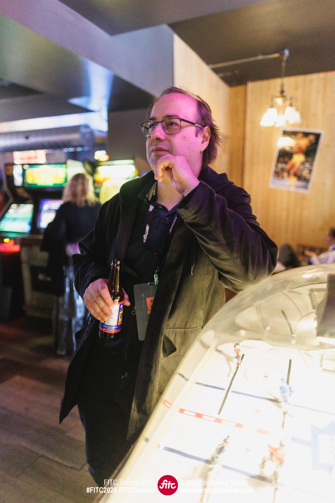

About Me
If you’re here, you’re likely wanting to learn more about my approach to web development and graphic design that make my creations stand out from the ordinary. My goals with my creations are to establish solutions for clients that are distinct from what any others may build, while still having a grounding in some conventions with an edge of humour.
My Story
When looking back at my career and life so far, I have found that I have one big passion in life: to create.
Whether it was my brief time pursuing comedy, or my time creating video games, pursuing graphic design, or more recently, finding my passion for creating great websites, they've all revolved around creating works of art that I want people to experience and enjoy!
While my pursuit of games has become more of a hobby, and after five years in the grahpic design field, I feel it's time for a fresh start by developing websites for whoever needs them, whether it's a bank, a small business, or any organization that needs to put their name and brand for all to see!
I'm currently a student at Humber Polytechnic, enrolled in their Web Development post-graduate program. I've learned a lot about this field and myself in just over the last six months and I'm eager to show off my new talents and skills!

What I Do
As both a designer and developer with several years of experience, I have the ability to create great things as both an indivudal and as a member of a team. My cross-disciplinary skillset allows me to communicate with other memebers with similar or even very different backgrounds. I am flexible in my approach when it comes to development, being able to pivot or seek new perspectives and strategies to build something amazing.
My Web Development skills are at the top of my class at Humber Polytechnic. I have been able to excel at all of my assignments and know how to troubleshoot when I run into a difficulty. I know when to seek guidance when necessary, but learn from those that help to improve my skills.
My Graphic Design background also helps me with my Web Development skills. Knowing best practices when it comes to layouts, colours, font use, and more. Having these design skills gives me an edge when building websites, creating print media, and even games.
With my background in Game Design, I also have skills in making 3D models. Whether it's for video games, or for 3D printing, I have the aptitude for 3D Design and can apply it if necessary.
My Approach
My four principles for design are:
Empathy
Recognizing the needs of those I work for to understand what they are trying to convey with their own brands.
Subversion
Thinking outside of the normal to create something that stands out, bucking trends that others may follow.
Moderation
While understanding that some rules should be bent or broken, others should be adhered to in order to keep designs grounded.
Humour
Approach design with a funny outlook. Make em’ laugh!